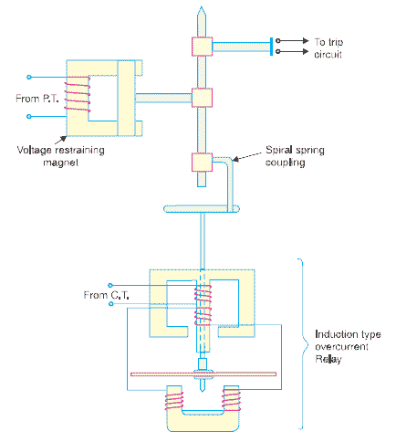

Types of Distance or Impedance Relay
Definite Distance Relay
Time Distance Impedance Relay
Construction of Time Distance Impedance Relay
Operating Principle of Time Distance Impedance Relay
There is one type of relay which functions depending upon the distance of fault in the line. More specifically, the relay operates depending upon the impedance between the point of fault and the point where relay is installed. These relays are known as distance relay or impedance relay.
Working Principle of Distance or Impedance Relay
The working principle of distance relay or impedance relay is very simple. There is one voltage element from potential transformer and an electric current element fed from current transformer of the system. The deflecting torque is produced by secondary electric current of CT and restoring torque is produced by voltage of potential transformer. In normal operating condition, restoring torque is more than deflecting torque. Hence relay will not operate. But in faulty condition, the electric current becomes quite large whereas voltage becomes less. Consequently, deflecting torque becomes more than restoring torque and dynamic parts of the relay starts moving which ultimately close the No contact of relay. Hence clearly operation or working principle of distance relay, depends upon the ratio of system voltage and current. As the ratio of voltage to electric current is nothing but impedance a distance relay is also known as impedance relay.
The operation of such relay depends upon the predetermined value of voltage to electric current ratio. This ratio is nothing but impedance. The relay will only operate when this voltage to electric current ratio becomes less than its predetermined value. Hence, it can be said that the relay will only operate when the impedance of the line becomes less than predetermined impedance (voltage / current). As the impedance of a transmission line is directly proportional to its length, it can easily be concluded that a distance relay can only operate if fault is occurred within a predetermined distance or length of line.
Types of Distance or Impedance Relay
There are mainly two types of distance relay-
- Definite distance relay.
- Time distance relay.
Let us discuss one by one.
Definite Distance Relay
This is simply a variety of balance beam relay. Here one beam is placed horizontally and supported by hinge on the middle. One end of the beam is pulled downward by the magnetic force of voltage coil, fed from potential transformer attached to the line. Other end of the beam is pulled downward by the magnetic force of electric current coil fed from current transformer connected in series with line. Due to torque produced by these two downward forces, the beam stays at an equilibrium position. The torque due to voltage coil, serves as restraining torque and torque due to electric current coil, serves as deflecting torque.
Under normal operating condition restraining torque is greater than deflecting torque. Hence contacts of this distance relay remain open. When any fault is occurred in the feeder, under protected zone, voltage of feeder decreases and at the same time electric current increases. The ratio of voltage to electric current i.e. impedance falls below the pre-determined value. In this situation, electric current coil pulls the beam more strongly than voltage coil, hence beam tilts to close the relay contacts and consequently the circuit breaker associated with this impedance relay will trip.
Time Distance Impedance Relay
This delay automatically adjusts its operating time according to the distance of the relay from the fault point. The time distance impedance relay not only be operated depending upon voltage to electric current ratio, its operating time also depends upon the value of this ratio. That means,

Construction of Time Distance Impedance Relay

The relay mainly consists of a electric current driven element like double winding type induction over electric current relay. The spindle carrying the disc of this element is connected by means of a spiral spring coupling to a second spindle which carries the bridging piece of the relay contacts. The bridge is normally held in the open position by an armature held against the pole face of an electromagnet excited by the voltage of the circuit to be protected.
Operating Principle of Time Distance Impedance Relay
During normal operating condition the attraction force of armature fed from PT is more than force generated by induction element, hence relay contacts remain in open position when a short circuit fault occurs in the transmission line, the electric current in the induction element increases. Then the induction in the induction element increases. Then the induction element starts rotating. The speed of rotation of induction elements depends upon the level of fault i.e. quantity of electric current in the induction element. As the rotation of the disc proceeds, the spiral spring coupling is wound up till the tension of the spring is sufficient to pull the armature away from the pole face of the voltage excited magnet.
The angle through which the disc travels the disc travel before relay operate depends upon the pull of the voltage excited magnet. The greater the pull, the greater will be the travel of the disc. The pull of this magnet depends upon the line voltage. The greater the line voltage the greater the pull hence longer will be the travel of the disc i.e. operating time is proportional to V.
Again, speed of rotation of induction element approximately proportional to electric current in this element. Hence, time of operation is inversely proportional to current.
Therefore time of operation of relay,
 by
by